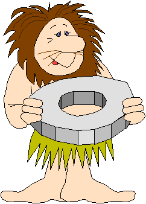
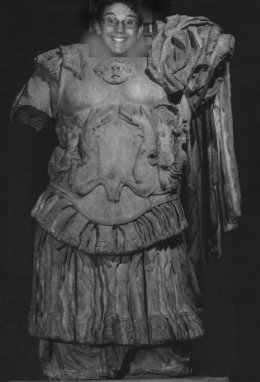

COSA ABBIAMO IMPARATO
OLLA! BISCHERI STI' ETRUSCHI! . . . TRANQUILLI, NON CI TROVIAMO NEL NUOVO FILM DI PIERACCIONI , BENSI' A BOLOGNA, ANZI FELSINA….
QUESTO POPOLO COMPARVE A FELSINA NEL IX SEC. A.C., SI APPOSTO' DAPPRIMA SUI COLLI, PERCHE' BOLOGNA ERA UNA ZONA ANCORA PALUDOSA; POI, A POCO A POCO, ARRIVO' IN "CITTA'".
NON PENSERETE MICA CHE GLI ETRUSCHI SI GRATTASSERO DALLA MATTINA ALLA SERA?!? SE LO PENSATE, SIETE DEGLI "SCULTURATI"!
NEL SETTORE ARTIGIANALE ERANO "ER MEJO": FABBRICAVANO VASI E
URNE CINERARIE CON L'ARGILLA; LAVORAVANO I METALLI OTTENENDO SPILLE, ORNAMENTI E ARMATURE; INOLTRE UTILIZZAVANO CUOIO, VETRO, AMBRA, CERAMICA E ORO.STI' TOSCANACCI SENTIVANO MOLTO IL CULTO DEI MORTI, CHE CREMAVANO E DEPOSITAVANO IN APPOSITE
URNE. ASSIEME ALLE CENERI DEL DEFUNTO, NELLE TOMBE, VENIVANO DEPOSITATI OGGETTI CARI ALLO STESSO, E DAGLI OGGETTI RIUSCIAMO A DEDURRE IL SESSO DEL DEFUNTO; "FAMO" LE CORNA E CAMBIAMO DISCORSO. . .
FASI DELLA CIVILTA' ETRUSCA
DOVETE SAPERE CHE DURANTE L'ORIENTALIZZAZIONE, GRAZIE ANCHE AL PORTO DI SPINA, BOLOGNA DIVENTO' IL CENTRO DEI COMMERCI.
SCUSATE LO STILE SERIO: DURANTE LA TERZA FASE L'ETRURIA VENNE INVASA DAI GALLI CHE ERANO MILTARMENTE PIU' FORTI, MA CHE,TUTTAVIA, SI FUSERO CON GLI ABORIGENI; PURTROPPO NEL 189 A.C. FELSINA DIVENTO' CITTA ROMANA. I ROMANI DISTRUSSERO TUTTO QUELLO CHE TROVARONO (SIGH).
E COSI' VISSERO TUTTI FELICI E CONTENTI! (SI FA PER DIRE!).
GLOSSARIO
URNA CINERARIA
: VASO DI ARGILLA IN CUI VENIVANO DEPOSITATE LECENERI DEL MORTO.
AMBRA:
RESINA FOSSILE IMPORTATA DAI PAESI BALTICI.ORO
: METALLO DI VALORE IMPORTATO DALL'EGITTO.VILLANOVIANO
: I PRIMI RESTI DELLA CIVILTA' ETRUSCA FURONO RITROVATI A VILLANOVA DI CASTENASO POCO LONTANO DA BOLOGNA.

AND THAT'S ALL FOLKS!!!!!!!
( E QUESTO E' TUTTO!)
PER EVENTUALI PROTESTE RIVOLGERSI A:
SABRINA VESPRINI
, BEATRICE BONZAGNI, DANIELA GUIDARINI